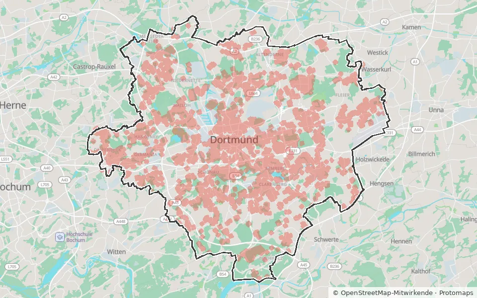
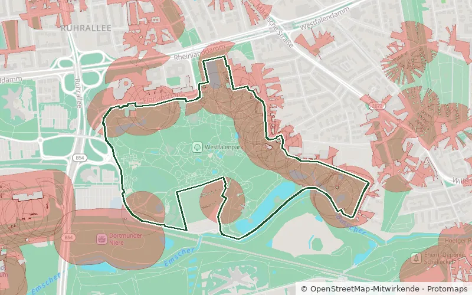
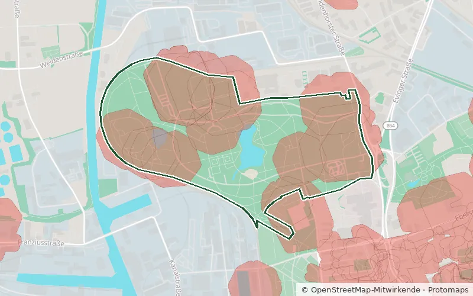
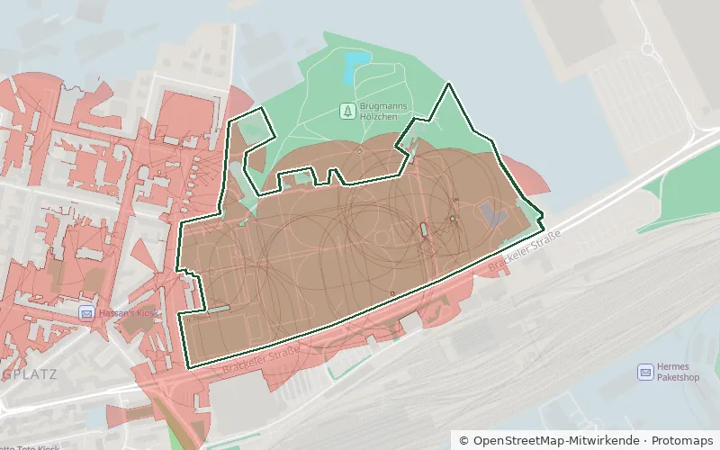
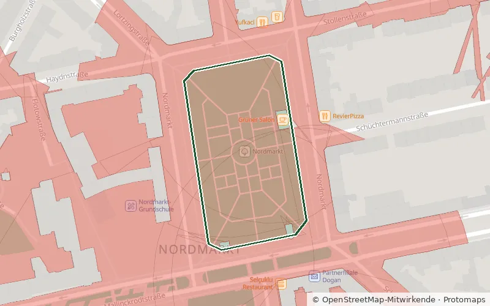
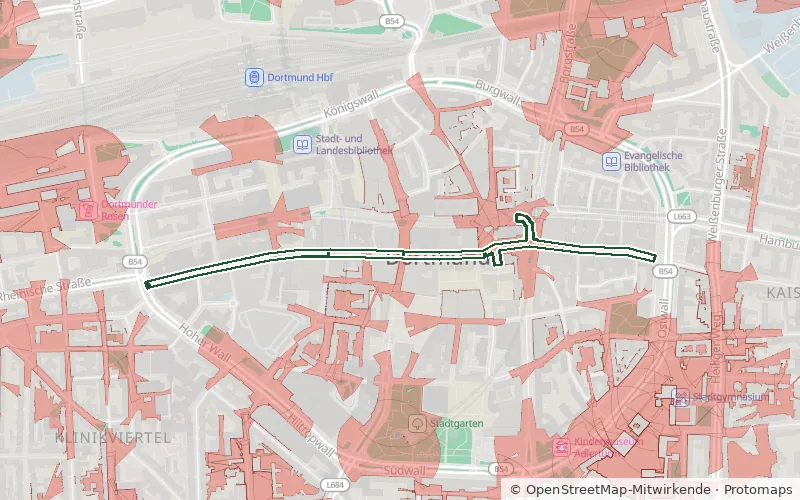
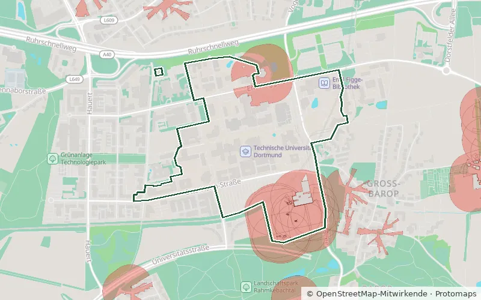

In Dortmund ist öffentliches Kiffen auf 49 km² verboten, das sind 17,4 % der Stadtfläche von 281 km². Grund sind 2 840 Einrichtungen, in deren Sichtweite nach § 5 KCanG nicht konsumiert werden darf, vor allem Spielplätze und Sportstätten. Sichtweite heißt: höchstens 100 Meter vom Eingangsbereich, und nur dort, wo kein Gebäude die Sicht verdeckt. Dazu kommen die Fußgängerzonen, in denen zwischen 7 und 20 Uhr nicht konsumiert werden darf, und überall die unmittelbare Gegenwart von Kindern und Jugendlichen.
Die Stadt Dortmund hat eine eigene Karte der Verbotszonen veröffentlicht, mit Spielplätzen, Schulen, Kinder- und Jugendeinrichtungen, Sportanlagen und den Fußgängerzonen nach ihren Angaben (Cannabiskarte der Stadt).

Woher die Zonen kommen
| Einrichtung | Anzahl | Zonenfläche |
|---|---|---|
| Schulen | 213 | 9,7 km² |
| Kitas und Kindergärten | 345 | 10,1 km² |
| Kindertagespflege | 17 | 0,3 km² |
| Spielplätze | 1 123 | 19,1 km² |
| Kinder- und Jugendeinrichtungen | 54 | 1,1 km² |
| Sportstätten | 1 087 | 23,9 km² |
| Anbauvereinigungen | 1 | unter 0,1 km² |
Die Spalte rechts zählt jede Art für sich; weil sich Zonen verschiedener Einrichtungen überlappen, ist ihre Summe größer als die 49 km² oben. Fast gleich viel machen die 1 087 Sportstätten und die 1 123 Spielplätze aus.
Auf Spiel- und Bolzplätzen, Skateflächen, Friedhöfen und Schulhöfen verbietet die ordnungsbehördliche Verordnung der Stadt seit August 2026 außerdem Alkohol und „andere Rauschmittel“ (Dortmunder Bekanntmachungen, Juli 2026). Von den Anbauvereinigungen ist in OpenStreetMap eine eingetragen; wo die übrigen anbauen, ist nicht veröffentlicht.
Parks
Im Westfalenpark liegen 46 % der Fläche in einer Zone, um 25 Spielplätze im Park. Die Besuchsordnung verbietet außerdem, im Umkreis von 100 Metern um Spielplätze, Kindereinrichtungen und Sportanlagen Cannabis mitzuführen oder zu konsumieren, und bei Veranstaltungen im Park, etwa beim Juicy Beats, ist Cannabis ganz untersagt (Besuchsordnung Westfalenpark). Im Rombergpark bittet die Stadt um dasselbe.

Im Fredenbaumpark sind es 58 %, mit elf Sportanlagen und vier Spielplätzen, im Hoeschpark 89 %, mit 18 Sportanlagen. Der Nordmarkt in der Nordstadt liegt fast ganz in einer Zone (98 %): Zwei Spielplätze liegen auf dem Platz.



Der Rombergpark kommt auf 12 %, der Phoenix-See auf 2 % der Wasserfläche. In den großen Wäldern im Süden liegen kaum Zonen; ohne den Wald gerechnet sind es 18,9 % der Stadtfläche.
Innenstadt
Die Fußgängerzonen der Stadt Dortmund stehen in ihrer Cannabiskarte; sie decken sich nicht ganz mit OpenStreetMap. Westenhellweg und Ostenhellweg sind auf beiden Karten zum größten Teil Fußgängerzone; dort gilt zwischen 7 und 20 Uhr Konsumverbot. Hansaplatz und Friedensplatz sind in OpenStreetMap als Fußgängerbereich eingetragen, auf der Karte der Stadt nicht; umgekehrt führt die Stadt etwa die Promenaden am Phoenix-See als Fußgängerzone. Blau zeigt diese Karte die Fußgängerbereiche aus OpenStreetMap.
Von Westen- und Ostenhellweg liegen außerdem 31 % in einer Sichtweiten-Zone. Der Alte Markt (1 %) und der Friedensplatz (4 %) liegen fast außerhalb der Zonen, der Hansaplatz mit dem Weihnachtsmarkt zu 30 %.

Hochschulen
Hochschulen sind nach § 5 KCanG keine Verbotsorte. Auf dem Campus der TU Dortmund liegen 23 % in einer Zone, um zwölf Sportanlagen auf dem Gelände.

Was sonst noch gilt
Ein Verstoß gegen § 5 Abs. 2 kostet in Nordrhein-Westfalen 50 bis 500 Euro, in Gegenwart von Minderjährigen 300 bis 1.000 Euro (Land NRW); zuständig ist die Stadt. Für Volksfeste sind die Veranstalter nach einem Erlass des Landes verpflichtet, Verstöße zu verhindern, notfalls mit einem generellen Konsumverbot (Erlass des Gesundheitsministeriums, Mai 2024). Eigene Verbotszonen für Cannabis außer den genannten Flächen hat Dortmund nicht (Stand 27. November 2026).
Häufige Fragen
Wo darf man in Dortmund kiffen?
Außerhalb der roten Flächen, außerhalb der Fußgängerzonen zwischen 7 und 20 Uhr, nicht auf Spiel- und Bolzplätzen, nicht in Gegenwart von Kindern und Jugendlichen und nicht dort, wo ein Hausrecht es verbietet. Eine weiße Fläche auf der Karte heißt nicht, dass Konsum dort erlaubt ist: Die Karte kennt weder Hecken noch Bäume, die die Sicht nehmen, noch Einrichtungen, die in OpenStreetMap fehlen.
Gibt es eine amtliche Karte?
Ja, die Stadt Dortmund hat eine veröffentlicht (Link oben). Diese Karte hier kann von ihr abweichen, etwa bei den Fußgängerzonen oder bei Einrichtungen, die in OpenStreetMap anders oder gar nicht eingetragen sind; im Zweifel gilt, was vor Ort ausgeschildert ist.
Wie genau ist das?
Die Zonen sind aus OpenStreetMap berechnet, mit Gebäuden als Sichthindernis, und werden täglich neu gerechnet; die Zahlen auf dieser Seite sind vom 27. November 2026. Die Karte ist eine Orientierungshilfe, keine Rechtsauskunft. Wie gerechnet wird und wo die Grenzen liegen, steht auf der Über-Seite.
Fehlt eine Einrichtung oder ist eine falsch eingetragen? Korrekturen in OpenStreetMap erscheinen am Tag darauf auf der Karte; nur eintragen, was es vor Ort wirklich gibt.